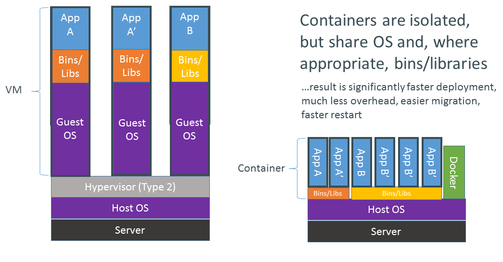
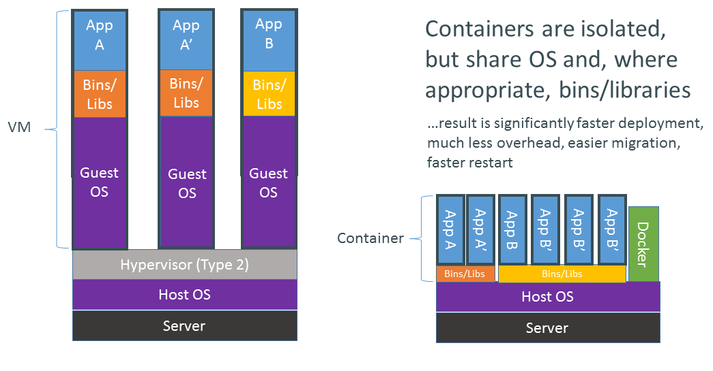

What is Docker?
- High-level API to manage containers
- Virtualized file system & network stack
- Container images can be shared and run anywhere
Dependency Hell
VMs vs Containers


How are containers built?

